Inauguración en 2018
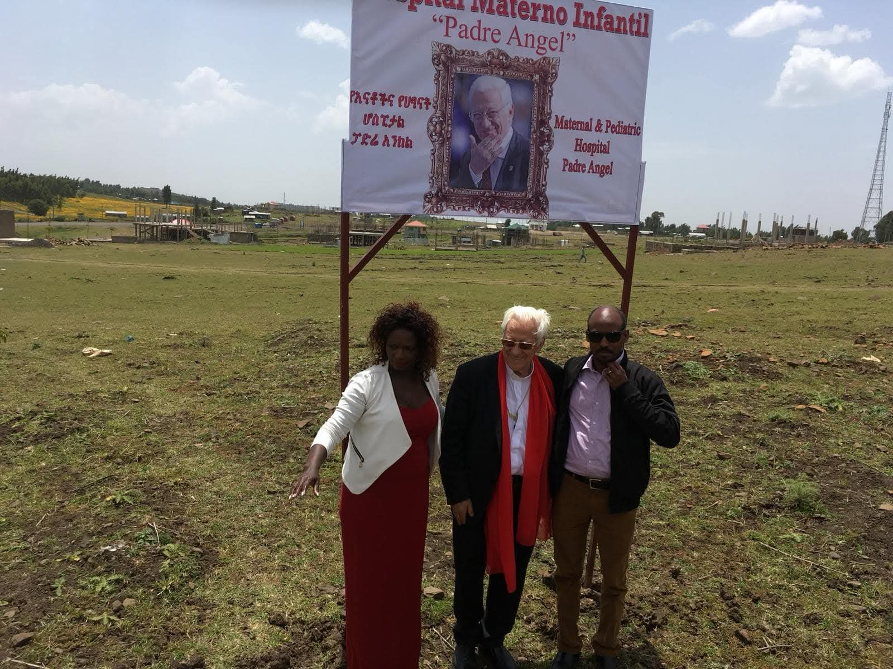
Con la presencia del Padre Ángel y Mensajeros de la Paz abrimos las puertas del hospital maternoinfantil.
Cada madre atendida cambia el destino de una familia entera.
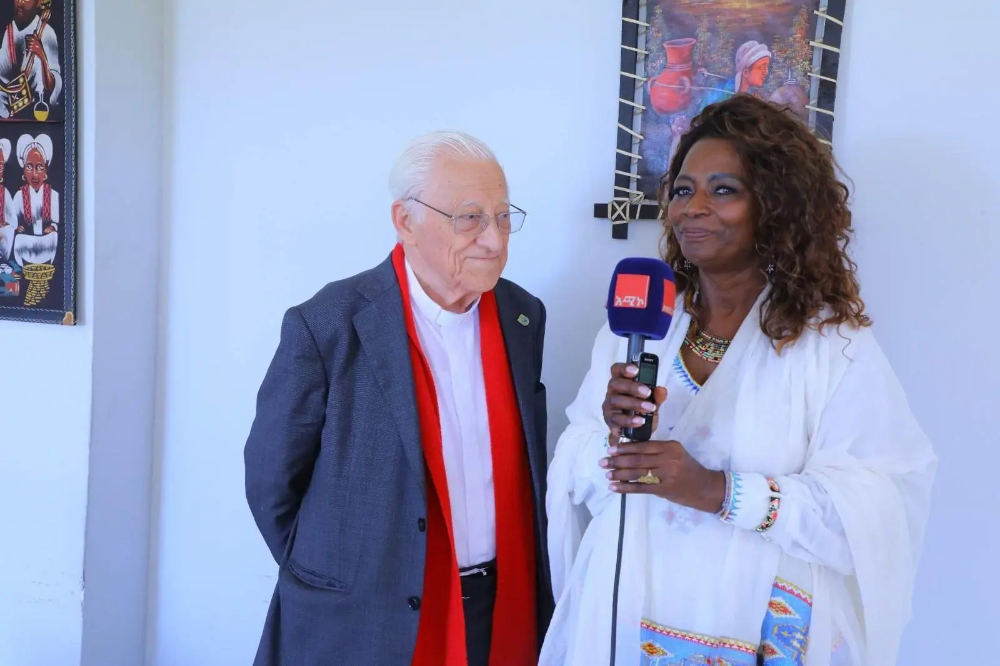
Yeshi Beyene, oriunda de Gondar, regresó a su tierra para cuidar a su abuela Mulu. Antes de morir, Mulu pidió a Yeshi una misión:
“Mejora la vida de las mujeres de nuestra región”.
Yeshi prometió hacerlo realidad y así nació AYME.
Hoy, aquella promesa es un hospital con quirófano, UCI neonatal y atención especializada.

Con la presencia del Padre Ángel y Mensajeros de la Paz abrimos las puertas del hospital maternoinfantil.
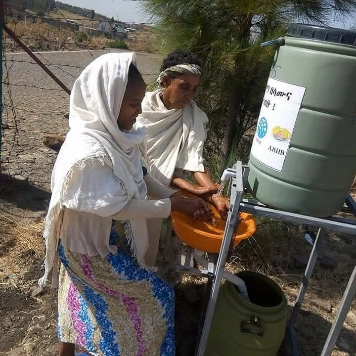
Instalamos un generador para garantizar el funcionamiento continuo del quirófano y la aparatología gracias al Ayuntamiento de Canarias.
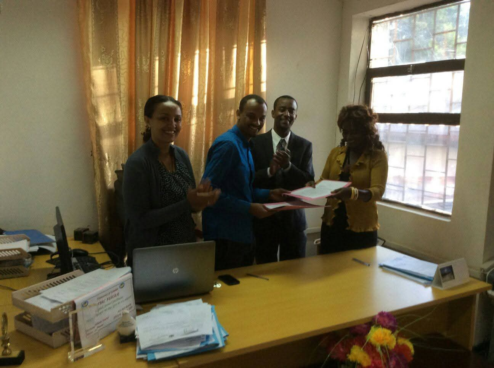
Colaboramos con Mensajeros de la Paz y el Principado de Asturias. Además, el Ayuntamiento de Fuenlabrada nos ha donado equipos clínicos.
Madres atendidas
Atención sanitaria
Hospital inaugurado
“Hay que ser solidarios.”
— Yeshi Beyene · Fundadora de AYME
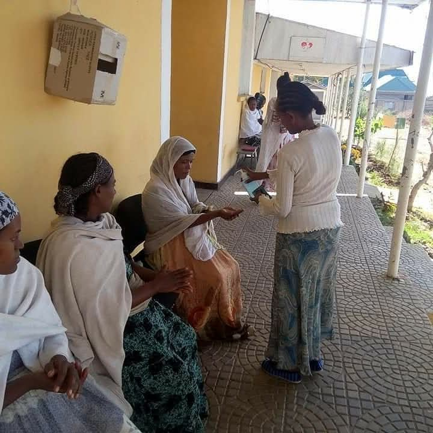
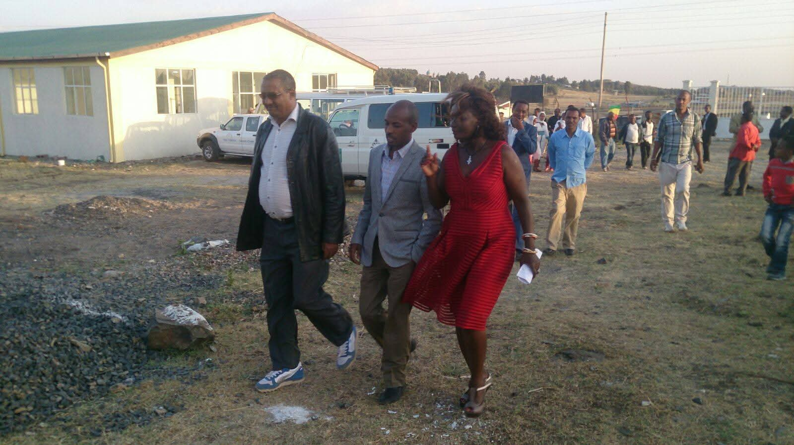
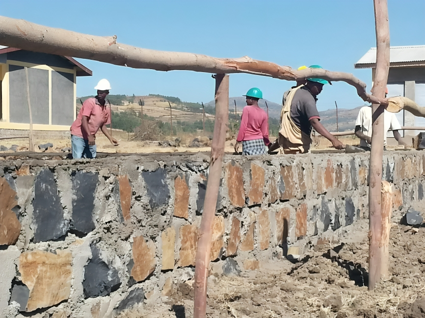

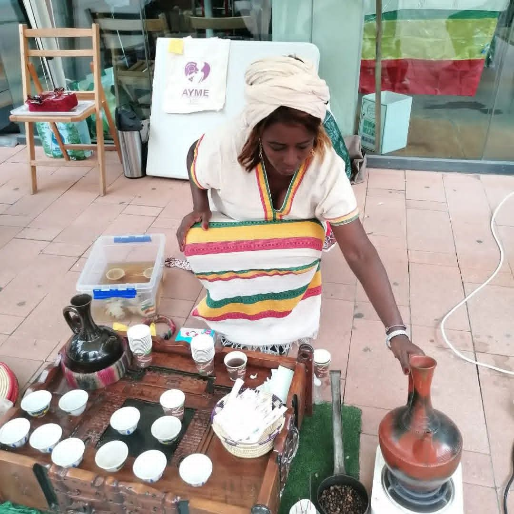
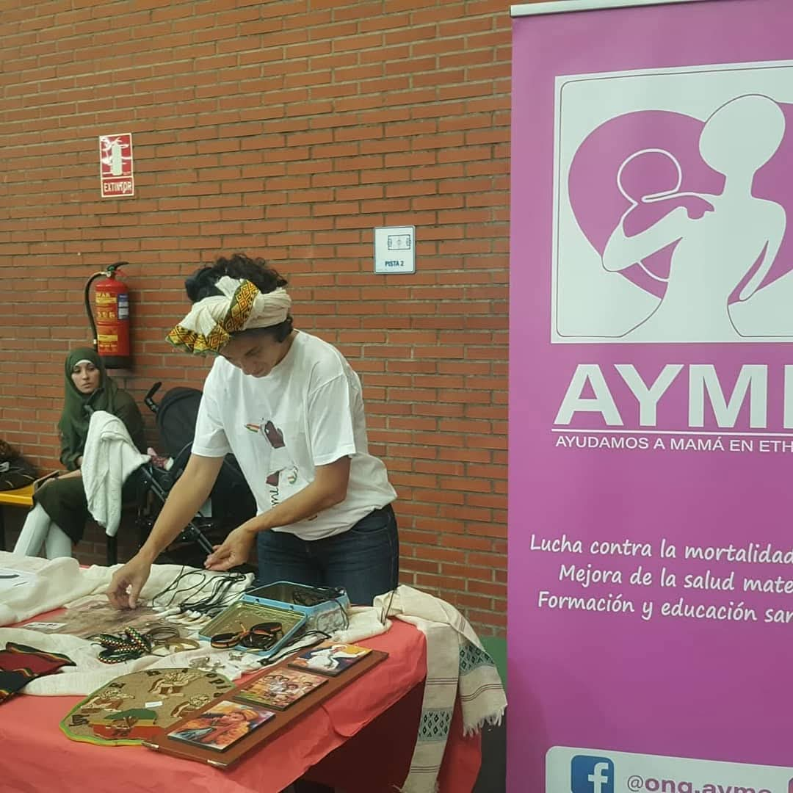
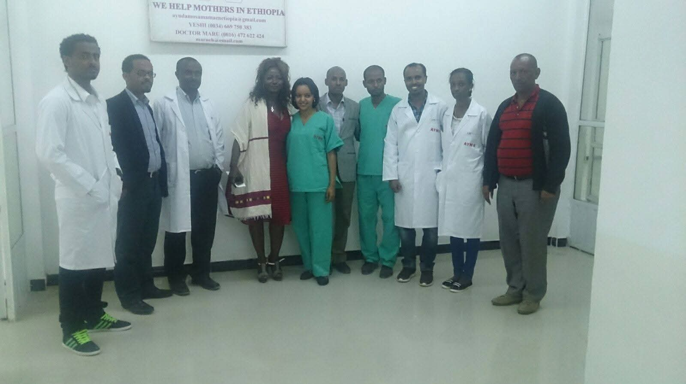
Organizaciones e instituciones que impulsan el proyecto AYME.
El programa de apadrinamiento de AYME acompaña a niñas en situación vulnerable para que puedan continuar sus estudios hasta los 18 años.
No es solo una ayuda económica: es un compromiso humano, estable y transformador con el futuro, la educación y las oportunidades de una niña.
Cada niña cuenta con el apoyo de una persona que decide caminar a su lado durante años.
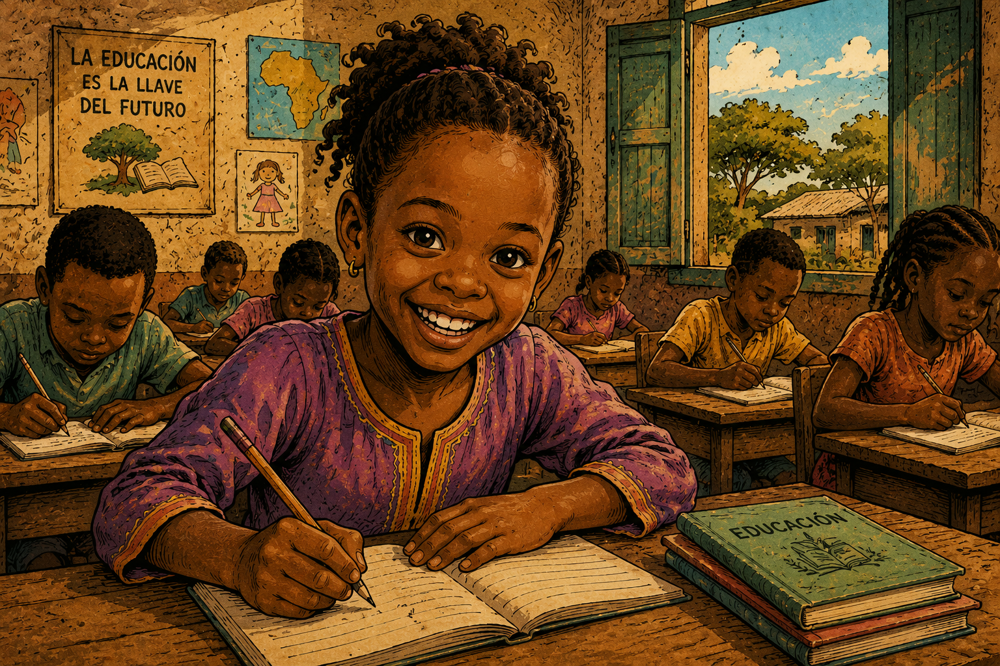
Cada aportación tiene un impacto directo.
Material básico
Atención a una madre
Un parto seguro
Bizum: 04662
Quiero ayudar ahoraGracias a AYME pude dar a luz con seguridad y sentirme acompañada en uno de los momentos más importantes de mi vida.
Nuestro hospital representa hoy una esperanza real para muchas familias que antes no tenían acceso a atención maternoinfantil segura.
Cada nueva madre atendida significa una oportunidad de futuro para toda una familia.
Las donaciones se destinan directamente a proyectos sanitarios, atención maternoinfantil y mejora de infraestructuras médicas en Gondar, Etiopía.
AYME desarrolla principalmente su labor en Gondar, Etiopía, apoyando proyectos de atención materna y neonatal.
Puedes colaborar realizando una donación, participando como voluntario, difundiendo el proyecto o contactando directamente con nuestra asociación.
Sí. AYME trabaja para garantizar la máxima transparencia y que las aportaciones tengan un impacto directo sobre el terreno.
El hospital ofrece atención maternoinfantil, partos seguros, asistencia neonatal y apoyo sanitario especializado para mujeres y familias.
Sí. Puedes contactar con AYME para recibir más información, colaborar activamente o conocer mejor el impacto del proyecto.
Escríbenos para colaborar, donar o conocer mejor el proyecto.